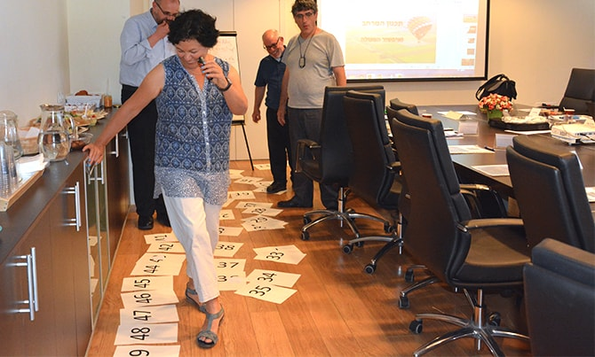
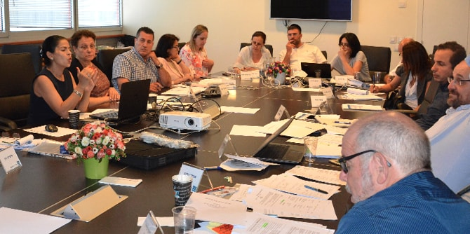

את המפגש פתחה
ד"ר רעות גורדון, בוגרת מחזור ה' של בית ספר מנדל למנהיגות חינוכית, בפעילות קבוצתית ובהרצאה בנושא
תכנון המרחב ואפשור הפעולה. באמצעות משחק קבוצתי המחישה גורדון כיצד המרחב יוצר ומכתיב אינטראקציות. כמו כן הציגה עקרונות של תכנון מרחב ודנה במשמעותם ובשינוי שחל בתפיסה הארגונית ובמעבר מהמודל ההיררכי (דגם העץ) למודל הרשתי השטוח (דגם הריזום). לדבריה, ההבנה שהמרחב הוא גורם משפיע בדינמיקה קבוצתית, ועלול להפריע או לעזור לתהליכים להתרחש, עשויה לסייע לחברי דירקטוריון, ובמיוחד ליו"ר, לקדם נושאים ופעולות.

רו"ח לימור אדרי-אלימלך, מרצה ויועצת לארגונים עסקיים וחברתיים בתחום הניהול הפיננסי, העבירה סדנת סימולציה לניתוח דוחות כספיים וחבילת דיווח, מנקודת מבטו של הדירקטור. היא הדגימה קריאה ביקורתית של הדוחות והדריכה כיצד לאתר ולזהות את השאלות הנכונות שיובילו לערך מוסף מיטבי.
פרופ' שחר אייל, ראש התוכנית לתואר שני בפסיכולוגיה חברתית במרכז הבינתחומי הרצליה, הרצה על החלטות אי-רציונליות של יחידים וקבוצות. שחר סקר גישות בחקר קבלת החלטות – הנורמטיבית והדסקריפטיבית – ודן בטעויות בשיפוט האנושי ובהבדל בין טעות לבין הטיה. הוא הציג שתי מערכות חשיבה: אסוציאטיבית ומבוססת חוקים, ואת הקונפליקט שיכול להתקיים בין שתיהן, וכן דיבר על חשיבה בתנאי אי-ודאות ועל קיצורי הדרך שאנשים עושים כדי להגיע לפתרון מהיר וחסכוני, לעתים במחיר של חוסר דיוק. שחר הדגים כיצד המוח האנושי לומד להשתמש בסביבה באופן אינטואיטיבי ולפענח מידע בעזרת הקשר, וכיצד נטייה זו גורמת לנו להטיות ולטעויות בשיפוט.
נסקרו שתי גישות בנוגע לשאלה האם החלטות קבוצתיות טובות מהחלטות יחידים. הגישה המצדדת בקבוצה מדגישה את המגוון והשונות כערובה לטיב ההחלטה, ואילו הגישה המצדדת בהחלטות יחידים מצביעה על הסכנות הטמונות בחשיבה קבוצתית וברצון לשמר הרמוניה ולכידות על חשבון הערכות אובייקטיביות של המציאות.

כמו כן נדונו תסמינים של חשיבה קבוצתית, כגון הטיות משותפות, אשליה של אי-פגיעות, פיזור אחריות, קונפורמיות, ועוד. נדונו אסטרטגיות למניעת חשיבה קבוצתית: לבקש נתונים ולפעול על-פיהם כדי להתגבר על הטיות, לשמוע את דעתו של מנהיג הקבוצה רק לאחר שכל חברי הקבוצה יביעו את דעתם, למנות לקבוצה פרקליט שטן (בדירקטוריון – זהו תפקידו של מנהל סיכונים, שאמור להשוות בין חלופות ולהתריע מה עלול להשתבש), להציג לחברי הקבוצה חוות דעת חיצונית ולהעריך תוכניות חלופיות.
בסיום אמר שחר כי בני אדם רציונליים הרבה פחות ממה שהם חושבים, אבל בנימה אופטימית ציין כי אי-רציונליות זו שיטתית וניתנת לחיזוי.
{kind=link}
{kind=link}